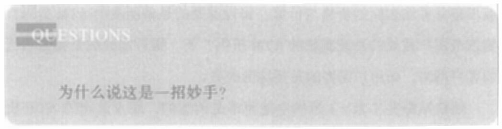

随着故事继续发展，麦克唐纳成为网络红人，并引起了一位导演的注意。又经过一系列交换操作，这位导演邀请麦克唐纳参演他执导的新节目。这个消息进一步提升了麦克唐纳的知名度和影响力，他开始被更多人所熟知。
这时，加拿大一个小镇的政府也留意到了这起持续被报道的事件及麦克唐纳本人。这个小镇风景优美，但是因为人口流失，大量房屋空置。政府希望通过发展旅游业给小镇生机。小镇政府决定，用当地一座空置别墅的使用权，去交换小镇在麦克唐纳的演出中的曝光。
别针换别墅的故事就这样走到了终点。
回头来看前面提的问题。
为什么说换得录制唱片合同的那次交易是一招妙手呢?
注意，我把这个故事分成了上下两个半场。
上半场，麦克唐纳交换的所有东西都是物质。
红色曲别针、鱼形钢笔、笑脸门把手、旧烤炉、旧发电机、古老的百威啤酒桶、旧的雪地汽车，全部都是物质。而麦克唐纳一直在使用同一条交易逻辑：利用价格的模糊性，利用交易对手对效用的诉求，不断换到价值更高的物质。
下半场，交易逻辑变了。麦克唐纳不再追求物质，而是开始追求影响力。别针换不到别墅，但是影响力可以。
372